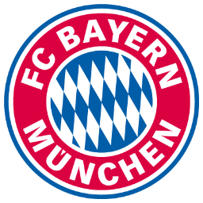
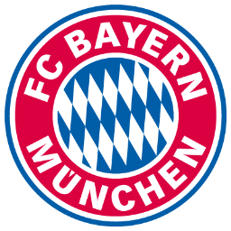

THOMAS TUCHEL
En 2009, tras un exitoso período de un año en el FC Augsburg II, fue contratado por el recién ascendido club Mainz 05 de la Bundesliga.Tuchel guio al Mainz a la estabilidad de la liga durante sus cinco temporadas en el club, y ganó elogios por su estilo de fútbol enérgico y ofensivo. También cultivó una reputación por su enfoque en la promoción de jugadores juveniles. Partió de Mainz en 2014 como resultado de disputas financieras y, en 2015, fue nombrado miembro del Borussia Dortmund, club de la Bundesliga, donde ganó la DFB-Pokal antes de ser despedido en 2017.El 24 de marzo de 2023, el Bayern de Múnich anunció a Tuchel como nuevo entrenador del equipo bávaro hasta junio de 2025, reemplazando a Julian Nagelsmann.Debutó con una victoria por 4 a 2 contra el Borussia Dortmund; pero unos pocos días después, fue eliminado en cuartos de final de la Copa de Alemania por el SC Friburgo.El 27 de mayo de 2023, Tuchel ganó su primera Bundesliga después de vencer en la última jornada al FC Colonia, por un marcador de 2-1. De esta manera, el Bayern de Múnich se convirtió en el primer y único equipo profesional de fútbol en toda la historia en ganar 11 ligas locales de manera consecutiva. El 21 de febrero de 2024, se anunció que Tuchel dejaría el cargo de entrenador del equipo alemán al término de la temporada.
 
